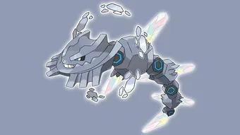

Mega Steelix is a Steel and Ground-type Mega Raid Boss in Pokémon GO. Known for its extremely high Defense stat, Mega Steelix can absorb significant damage while delivering powerful Steel- and Ground-type attacks. Although not the highest damage dealer among Mega Pokémon, its bulk can extend raid duration if trainers do not bring optimized counters.
In this complete guide, you will learn everything you need to know about Mega Steelix raids including its weaknesses, best counters, moveset, weather boosts, how many trainers are needed, catch CP values, and whether it is worth raiding.
Stats & Basic Info
| Type | Steel / Ground |
| Max CP | 4565 |
| Weather Boost | Snowy, Sunny |
| Shiny | Yes |
🧬 About Mega Steelix in Pokémon GO
Mega Steelix is a Steel / Ground-type Pokémon. When Mega Evolved, it provides damage bonuses to Steel-type and Ground-type Pokémon in raids.
Mega Steelix is useful because:
- It boosts Steel-type and Ground-type Pokémon in raids
- It has extremely high defense and survives for a long time
- It is good against Fairy, Rock, Electric, and Poison-type raid bosses
⚠️ Mega Steelix Weaknesses
| Category | Details |
|---|---|
| ❌ Weak To: |
 Water • Water •
 Fighting • Fighting •
 Ground • Ground •
 Fire Fire
|
| ✅ Resistant To: |
 Normal • Normal •
 Flying • Flying •
 Poison • Poison •
 Rock • Rock •
 Bug • Bug •
 Steel • Steel •
 Electric • Electric •
 Psychic • Psychic •
 Dragon • Dragon •
 Fairy Fairy
|
Notes: Mega Steelix is extremely tanky, but Fighting and Water-types will melt its HP faster than others.
Double Weakness?
Mega Steelix does NOT have a double weakness. All weaknesses deal standard 1.6× super-effective damage.
Understanding the Real Challenge
The difficulty of Mega Steelix is not its damage output — it’s its bulk. It has one of the highest Defense stats among Mega raid bosses.
This means:
- Low DPS teams may time out
- Glass-cannon attackers are often preferred
- Team coordination matters heavily in small groups
🗡️ Best Counters for Mega Steelix
The best way to defeat Mega Steelix is to use strong Water, Fighting, Fire, and Ground-type Pokémon.
🔥 Best Fire-type Counters
- Fire Spin + Blast Burn
- Fire Fang + Overheat
- Mega Charizard Y (Fire Spin + Blast Burn)
- Reshiram (Fire Fang + Fusion Flare)
- Mega Blaziken (Fire Spin + Blast Burn)
- Chandelure (Fire Spin + Overheat)
Mega Blaziken combines Fighting and Fire coverage, both super effective. It also boosts other Fire and Fighting Pokémon in the lobby. One of the strongest overall choices.
Fire-types deal solid super-effective damage against Steel typing but must watch out for Ground-type charged moves.
💧Water-type Counters
- Waterfall + Hydro Pump
- Water Gun + Surf
- Mega Water Pokémon for team-wide boost
- Primal Kyogre (Waterfall + Origin Pulse)
- Swampert (Water Gun + Hydro Cannon)
- Gyarados (Waterfall + Hydro Pump)
Water-type damage performs consistently well, especially in Rainy weather. Kyogre provides strong DPS and decent survivability.
Water-type Pokémon exploit Mega Steelix’s weakness, making them the fastest and most reliable option in this raid.
🥊 Fighting-Type Counters
- Counter + Dynamic Punch
- Counter + Aura Sphere
- Lucario — (Counter + Aura Sphere)
- Conkeldurr — (Counter + Dynamic Punch)
Fighting Pokémon provide consistent damage but are not as powerful as Water counters due to the lack of double weakness.
🌍 Ground-Type Attackers (Highest Priority)
- Groudon — Mud Shot + Precipice Blades
- Garchomp — Mud Shot + Earth Power
- Excadrill — Mud-Slap + Drill Run
Primal Groudon delivers massive Ground-type damage while boosting Fire and Ground attackers. It excels due to raw power and synergy.
Ground-type damage is highly effective. Garchomp performs especially well in Sunny weather.
Best Mega Evolutions
Recommended Megas to use against Mega Steelix:
- Lucario, Blaziken, Heracross – 🥊 Fighting boost
- Swampert, Blastoise – 💧Water boost
- Garchomp – 🌍 Ground boost
- Blaziken, Charizard Y, Charizard X – 🔥Fire boost
🌀 Mega Steelix Moveset
🗡️ Fast Moves
- Iron Tail
- Dragon Tail
- Thunder Fang
💥 Charged Moves
- Earthquake
- Heavy Slam
- Psychic Fangs
- Breaking Swipe
- Crunch
Threat: Earthquake + Heavy Slam can deal massive damage to unprepared counters.
Tip: Avoid using Poison and Normal-types—they deal minimal damage.
Can Mega Steelix Be Soloed?
Short answer: Extremely difficult and generally not recommended.
Even with perfect counters and level 50 Pokémon, Mega Steelix’s bulk makes solo clears unrealistic for most players. Timer becomes the main issue.
High-level trainers with Primal Groudon and ideal weather may attempt experimental solos, but success is rare.
Duo Strategy (Advanced Section)
Duo is realistic under the right conditions:
- Both players Level 40+
- Top-tier counters only
- Sunny weather preferred
- Minimal relobby time
Ideal Duo Composition
- Player 1: Primal Groudon lead
- Player 2: Mega Blaziken lead
- Both players follow with high DPS Ground/Fire attackers
Communication is key. Relobby simultaneously to avoid losing Mega boosts.
Beginner Strategy Guide
If you are new to raids:
- Join groups of 4–6 players
- Use Water, Fire, or Ground Pokémon
- Avoid Electric Pokémon completely
- Power up a few strong counters rather than many weak ones
Budget-friendly options include:
- Swampert
- Blaziken
- Excadrill
- Machamp
Best Regular Counters
Regular pokemon that amplify the right types give you a powerful edge. Below are top Regular counters with short notes on why they excel.
| Pokémon | 🗡️ Fast Moves | 💥 Charged Moves | 🔄 Elite Moves | 🏆 Best Moves | 🧪 Why This Counter Works |
|---|---|---|---|---|---|
| Primal Groudon | Mud Shot / Dragon Tail | Earthquake / Fire Blast / Solar Beam | Precipice Blades / Fire Punch | Fire Punch and Solar Beam | Deals powerful Ground-type damage that hits Mega Steelix super-effectively. Its high bulk allows it to survive Earthquake while maintaining consistent DPS. |
| Primal Kyogre | Waterfall | Hydro Pump / Surf / Thunder / Blizzard | Origin Pulse | Waterfall and Hydro Pump | Exploits Steelix’s Water weakness with extremely high Water-type DPS. Origin Pulse and Waterfall melt its HP quickly. |
| Lucario | Counter / Bullet Punch | Close Combat / Power-Up Punch / Aura Sphere / Shadow Ball / Flash Cannon / Meteor Mash / Blaze Kick / Thunder Punch | Force Palm | Counter and Close Combat | Counter and Aura Sphere deal super-effective Fighting damage. Lucario’s high attack stat makes it one of the strongest non-Mega options. |
| Keldeo(Original) | Low Kick / Poison Jab | Close Combat / Sacred Sword / X-Scissor / Aqua Jet / Hydro Pump | None | Poison Jab and Hydro Pump | Fighting-type STAB attacks hit Steelix super-effectively, while Water typing helps resist Steel-type moves. |
| Terrakion | Double Kick / Smack Down / Zen Headbutt | Close Combat / Earthquake / Rock Slide | Sacred Sword | Smack Down and Earthquake | Double Kick and Sacred Sword provide strong Fighting-type damage, efficiently exploiting Steelix’s weakness. |
| Reshiram | Fire Fang / Dragon Breath | Stone Edge / Overheat / Draco Meteor / Crunch | Fusion Flare | Fire Fang and Overheat | Fire Fang and Fusion Flare deal super-effective Fire damage against Steel typing, making it a powerful ranged attacker. |
| Landorus | Mud Shot / Extrasensory | Superpower / Earthquake / Bulldoze / Stone Edge | Sandsear Storm | Extrasensory and Sandsear Storm | Mud Shot combined with Earthquake or Sandsear Storm delivers strong Ground-type damage that hits Steelix for super-effective damage |
| Keldeo(Resolute) | Low Kick / Poison Jab | Close Combat / Sacred Sword / X-Scissor / Aqua Jet / Hydro Pump | None | Poison Jab and Hydro Pump | Fighting-type STAB moves consistently pressure Steelix while Water typing improves survivability. |
| Blacephalon | Astonish / Incinerate | Shadow Ball / Mystical Fire / Overheat | Mind Blown | Incinerate and Overheat | Incinerate and Overheat deal strong Fire-type damage, taking advantage of Steelix’s Fire weakness. |
Best Shadow Counters
Shadow pokemon that amplify the right types give you a powerful edge. Below are top Shadow counters with short notes on why they excel.
| Pokémon | 🗡️ Fast Moves | 💥 Charged Moves | 🔄 Elite Moves | 🏆 Best Moves | 🧪 Why This Counter Works |
|---|---|---|---|---|---|
| Shadow Kyogre | Waterfall | Hydro Pump / Surf / Thunder / Blizzard | Origin Pulse | Waterfall and Hydro Pump | Shadow boost increases Water-type DPS significantly, making it one of the fastest ways to defeat Mega Steelix. |
| Shadow Groudon | Mud Shot / Dragon Tail | Earthquake / Fire Blast / Solar Beam | Precipice Blades / Fire Punch | Dragon Tail and Solar Beam | Shadow boost enhances Ground-type damage output, overwhelming Steelix’s defenses quickly. |
| Shadow Blaziken | Counter / Fire Spin / Ember | Focus Blast / Aura Sphere / Brave Bird / Overheat / Blaze Kick | Stone Edge / Blast Burn | Counter / Fire Spin and Overheat | Combines Fighting and Fire-type super-effective damage with Shadow bonus for very high DPS. |
| Shadow Moltres | Wing Attack / Fire Spin | Ancient Power / Fire Blast / Heat Wave / Overheat | Sky Attack | Fire Spin and Overheat | Fire Spin and Overheat deal heavy Fire-type damage, amplified by Shadow attack boost. |
| Shadow Conkeldurr | Counter / Poison Jab | Dynamic Punch / Focus Blast / Stone Edge | Brutal Swing | Counter / Poison Jab and Focus Blast | Counter and Dynamic Punch deal powerful super-effective Fighting damage with increased Shadow DPS. |
| Shadow Charizard | Air Slash / Fire Spin | Air Cutter / Fire Blast / Overheat / Dragon Claw | Wing Attack / Ember / Dragon Breath / Blast Burn / Flamethrower | Fire Spin and Overheat | Fire Spin and Blast Burn/Overheat exploit Steel typing while Shadow bonus increases burst damage. |
| Shadow Ho-Oh | Hidden Power / Steel Wing / Incinerate / Extrasensory | Brave Bird / Fire Blast / Solar Beam | Earthquake / Sacred Fire | Incinerate and Solar Beam | Incinerate and Sacred Fire apply strong Fire-type pressure, enhanced by Shadow attack bonus. |
| Shadow Heatran | Bug Bite / Fire Spin | Earth Power / Stone Edge / Iron Head / Fire Blast / Flamethrower | Magma Storm | Fire Spin and Fire Blast | Fire-type attacks hit Steel typing effectively while Heatran resists many Steelix moves. |
| Shadow Garchomp | Mud Shot / Dragon Tail | Earthquake / Sand Tomb / Fire Blast / Outrage / Breaking Swipe | Earth Power | Dragon Tail and Fire Blast / Earthquake | Earth Power or Earthquake deal strong Ground-type damage, and Shadow boost maximizes DPS output. |
| Shadow Darmanitan | Tackle / Fire Fang / Incinerate | Focus Blast / Rock Slide / Overheat / Psychic | None | Incinerate and Overheat | Pure Fire-type damage with Shadow boost makes it a high-risk, high-reward attacker. |
| Shadow Kingler | Metal Claw / Bubble | Vise Grip / X-Scissor / Water Pulse / Crabhammer / Razor Shell | Mud Shot | Bubble and Crabhammer | Crabhammer delivers powerful Water-type damage, boosted further by Shadow attack increase. |
| Shadow Chandelure | Hex / Fire Spin / Incinerate | Shadow Ball / Overheat / Flame Charge / Energy Ball | Poltergeist | Incinerate and Overheat | Overheat provides heavy Fire-type burst damage enhanced by Shadow boost. |
| Shadow Emboar | Low Kick / Ember | Focus Blast / Rock Slide / Heat Wave / Flame Charge | Blast Burn | Ember and Focus Blast | Fighting and Fire coverage allow consistent super-effective damage with Shadow bonus. |
Best Mega Counters
Mega pokemon that amplify the right types give you a powerful edge. Below are top Mega counters with short notes on why they excel.
| Pokémon | 🗡️ Fast Moves | 💥 Charged Moves | 🔄 Elite Moves | 🏆 Best Moves | 🧪 Why This Counter Works |
|---|---|---|---|---|---|
| Mega Heracross | Counter / Struggle Bug | Close Combat / Upper Hand / Earthquake / Rock Blast / Megahorn | None | Struggle Bug and Earthquake | Provides Fighting-type team boost while dealing strong super-effective damage with Counter and Close Combat. |
| Mega Blastoise | Rollout / Water Gun / Bite | Skull Bash / Flash Cannon / Hydro Pump / Ice Beam | Hydro Cannon | Rollout and Hydro Pump | Boosts all Water-type teammates while delivering steady Water-type super-effective damage. |
| Mega Charizard X | Air Slash / Fire Spin | Dragon Claw / Fire Blast / Air Cutter / Overheat | Dragon Breath / Ember / Wing Attack / Flamethrower / Blast Burn | Fire Spin and Overheat | Fire-type attacks hit Steelix super-effectively while boosting Fire-type teammates. |
| Mega Swampert | Mud Shot / Water Gun | Sludge / Sludge Wave / Earthquake / Surf / Muddy Water | Hydro Cannon | Water Gun and Earthquake | Water-type attacks hit Steelix for super-effective damage and boost team Water attackers. |
| Mega Garchomp | Mud Shot / Dragon Tail | Earthquake / Sand Tomb / Fire Blast / Outrage / Breaking Swipe | Earth Power | Dragon Tail and Fire Blast / Earthquake | Ground-type attacks deal consistent super-effective damage while boosting Ground-type teammates. |
| Mega Charizard Y | Air Slash / Fire Spin | Dragon Claw / Fire Blast / Air Cutter / Overheat | Dragon Breath / Ember / Wing Attack / Flamethrower / Blast Burn | Fire Spin and Overheat | High Fire-type DPS combined with Mega boost increases total team damage significantly. |
| Mega Blaziken | Counter / Fire Spin / Ember | Focus Blast / Aura Sphere / Brave Bird / Overheat / Blaze Kick | Stone Edge / Blast Burn | Counter / Fire Spin and Overheat | Combines Fighting and Fire coverage while boosting both types for teammates. |
| Mega Lucario | Counter / Bullet Punch | Close Combat / Power-Up Punch / Aura Sphere / Shadow Ball / Flash Cannon / Meteor Mash / Blaze Kick / Thunder Punch | Force Palm | Counter and Close Combat | One of the strongest Fighting-type Megas, providing team-wide boost and extremely high DPS. |
🎯 Catch CP & 100% IV
After defeating Mega Steelix, you will catch a normal Steelix.
CP Range:
- No Weather Boost: 2,010-2,097 CP
- Weather Boost: 2,512-2,622 CP
100% IV:
- 2097 (Normal)
- 2622 (Weather Boosted)
Use:
- Golden Razz Berry
- Curveball Excellent Throws
Keep in mind that weather-boosted Mega Steelix is significantly harder to defeat, so always prepare strong Water, Fire, Fighting or Ground-type counters.
🌦️ Weather Boost
| Weather | |||
|---|---|---|---|
🌨️ Snowy
|
☀️ Sunny / Clear
|
☁️ Cloudy
|
🌧️ Rainy
|
Revive & Potion Cost
- Average revives used: 8–14
- Average potions used: 10–18
- Dodging significantly reduces resource usage
- Using Mega Pokémon reduces total relobbies
Common Raid Mistakes
- Using Electric-types
- Underestimating bulk
- Ignoring weather boosts
- Relobbying slowly
Recommended Group Size
- 2 Trainers: Possible with strong Water counters
- 3 Trainers: Reliable clear
- 4+ Trainers: Very comfortable win
Due to Mega Steelix’s high Defense, smaller groups should prioritize high-DPS Water-type teams.
Recommended Team Compositions
Best Team (3–5 Trainers)
- Mega Lucario (Counter + Aura Sphere)
- Primal Kyogre (Waterfall + Origin Pulse)
- Primal Groudon (Ground)
- Mega Blaziken (Fire)
- Keldeo (Fighting)
Balanced Team (5–7 Trainers)
- Mega Lucario (Counter + Aura Sphere)
- Reshiram (Fire Fang + Fusion Flare)
- Mega Charizard Y
- Mega Swampert (Water Gun + Hydro Cannon)
- Terrakion
- Shadow Conkeldurr
Even if your squad lacks perfect counters, mixing Fighting, Water, Fire, and Ground types will steadily wear down Mega Steelix’s HP.
👥 How Many Trainers Are Needed?
- 2–3 strong trainers with Fire or Water-types → Possible
- 4–5 average trainers → Comfortable clear
- Lower-level groups → 6+ recommended
Mega Steelix does not have a double weakness, but Water and Fighting are typically the most consistent damage options.
🧠 Best Strategy to Defeat Mega Steelix
Focus on Water Damage
Build your team around powerful Water Pokémon to maximize consistent super-effective damage.
Avoid Electric-Type Attackers
Electric-type attacks are completely ineffective against Ground typing.
Use Mega Boosts Early
Activating a Mega Water Pokémon at the start boosts team-wide Water damage significantly.
Evolution, Mega Details & Buddy Distance
| Evolution Line | Base(Onix) → Final(Steelix) → Mega(Steelix) |
| Mega Energy (First) | 200 |
| Subsequent Cost | 40 |
| Buddy Distance | 5 km |
| Mega Energy via Buddy | Yes |
| Mega Boost Bonus(Walking) | Extra Candy |
| Mega Boost Bonus(Catch) | Extra Steel/Ground-type Candy |
| Mega Boost Bonus(Buddy^) | 25 Mega Energy per candy |
Buddy Distance
5 km (per Pokémon GO buddy distance)
Shadow & Mega Comparison
🎁 Rewards
- Chance to catch Shiny Mega Steelix (with boosted IVs)
- Rare Candy & XL Candy
Is Mega Steelix Worth Powering Up?
Raid Utility
Mega Steelix is not a top-tier raid attacker but provides useful Steel-type Mega boosts.
PvP Utility
In certain PvP formats, Mega Steelix’s bulk can be interesting, though Megas are limited in most competitive leagues.
Mega Energy Farming
Farming energy is recommended for Pokédex and occasional event use.
📌 Is Mega Steelix Worth Raiding?
Mega Steelix is worth raiding mainly for its Mega boost to Steel and Ground-type Pokémon. It is not a top-tier Mega attacker, but it is useful for specific raid teams and for completing your Mega Pokédex.
FAQ
Can Mega Steelix be shiny in Pokémon GO?
Yes, if shiny Steelix is available in Pokémon GO, you have a chance to encounter its shiny form after the raid.
What are best moveset of Steelix?
Best moveset of Steelix are Iron Tail or Dragon Tail which does damage of 14 under Fast Attack and Earthquake which does damage of 140 under Charged Attack.
How many trainers are needed to defeat Mega Steelix?
2–4 trainers with strong Water or Fighting-type counters can defeat Mega Steelix efficiently.
Is Mega Steelix difficult to defeat?
Mega Steelix has extremely high defense but lower attack pressure. Proper type advantage makes it manageable for small groups.
Does Mega Steelix keep its Mega form after the battle?
Mega Evolution lasts only during battles where Mega is enabled; it does not persist outside combat.
Regular Sprite

🏁 Conclusion
Mega Steelix’s bulk and Steel/Ground typing make it a challenge, but with strong Fighting, Water, Fire, and Ground counters, you can take it down efficiently. Focus on exploiting its weaknesses, coordinate with fellow trainers, and take advantage of weather boosts to maximize damage and earn rewards like Mega Energy and Shiny Steelix.
Related Guides
Looking for more counters? Check out our Primal Groudon Raid Guide
Primal Groudon provides massive Ground-type damage and boosts Fire and Ground attackers in raids like Mega Steelix.
Mega Blaziken Raid Guide – Best Counters & StrategyMega Blaziken is one of the strongest counters against Mega Steelix. Learn optimal movesets, weather impact, and Mega synergy strategy.
Mega Abomasnow Raid Guide – Weakness & CountersCompare raid difficulty and weather strategy between Mega Abomasnow and Mega Steelix.
Exploring multiple raid guides will help you build stronger counter teams and understand Mega synergy mechanics more effectively.
Summary
- Fighting-types deal the highest damage
- Water-types cover Ground weakness
- Fire-types exploit Steel typing
- Focus on dodging Heavy Slam & Earthquake.